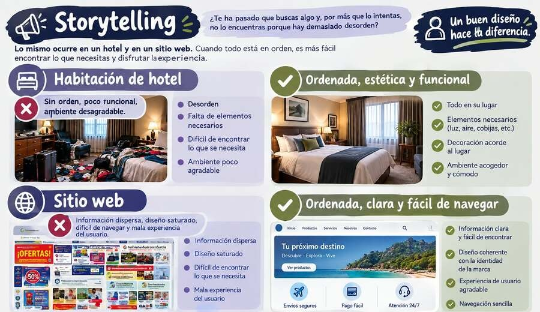
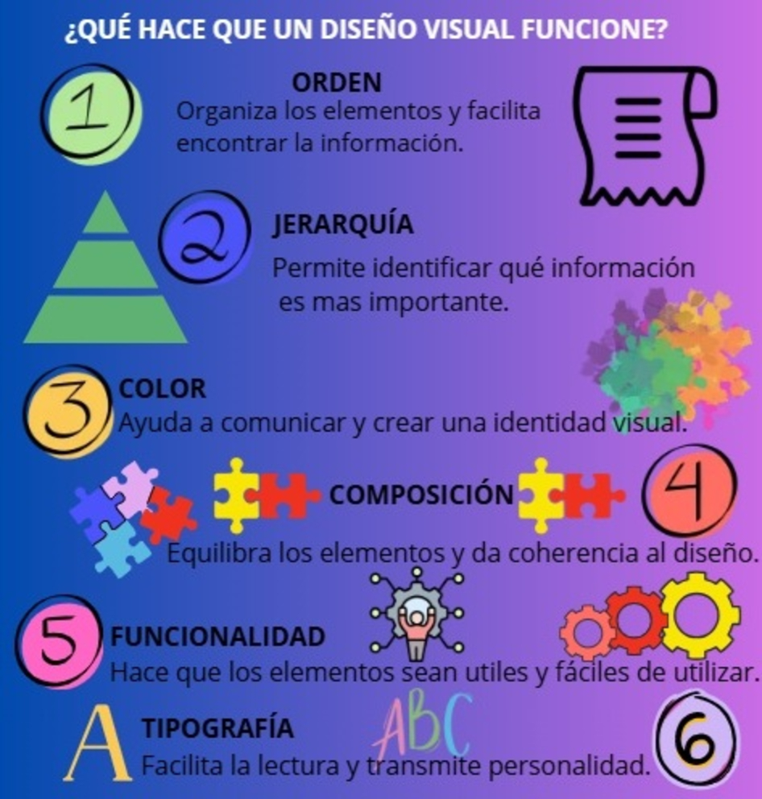
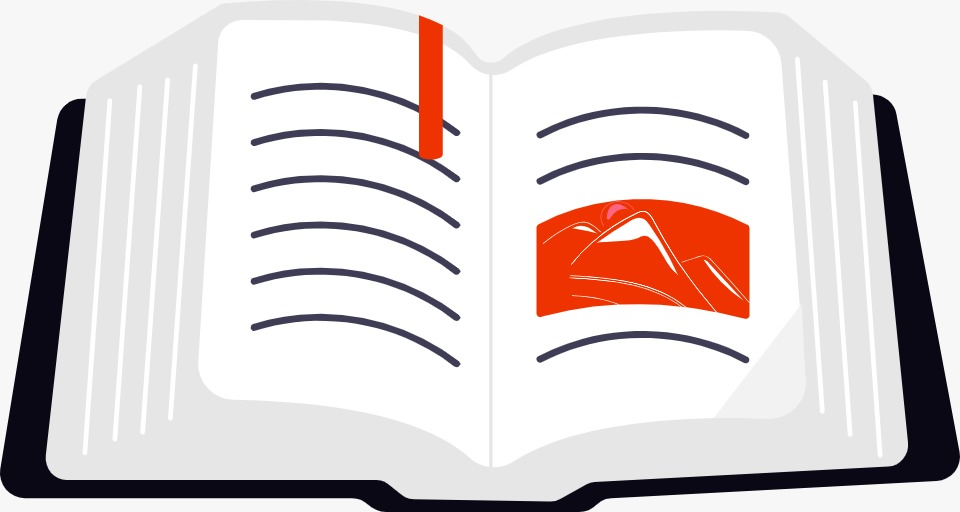

El diseño visual: mucho más que imagen, una experiencia navegable.

RECURSOS Y REFERENCIAS
Consulta otros recursos para ampliar tus conocimientos sobre diseño visual web.
En esta sección no encontrarás información aburrida, sino fuentes interesantes que te ayudarán a comprender la importancia del diseño visual web, sus principales elementos y su relación con la experiencia del usuario. Al final, podráss consultar fuentes bibliográficas para profundizar en el tema.
Para comprender y recordar como diseñar visualmente un sitio web de forma efectiva. A continuación:



RECURSO 3: REFERENCIAS BIBLIOGRÁFICASExodus Production. (s. f.). Importancia del diseño visual web.
https://exodusproduction.com/importancia-diseno-visual-web/
Wolf agencia de marketing digital . (2023). Definición de diseño visual en sitios web y su importancia en la experiencia del usuario.
https://wolfagenciademarketing.com/definicion-de-diseno-visual-de-un-sitio-web/
Estos recursos complementan la información presentada en UVM Wiki y permiten seguir explorando cómo el diseño visual contribuye a crear sitios web comprensibles, atractivos y funcionales.